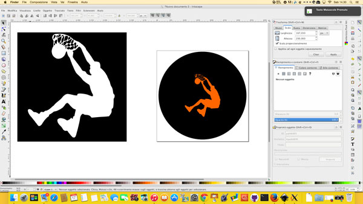
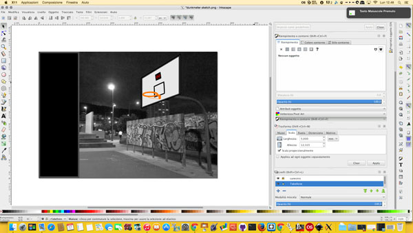
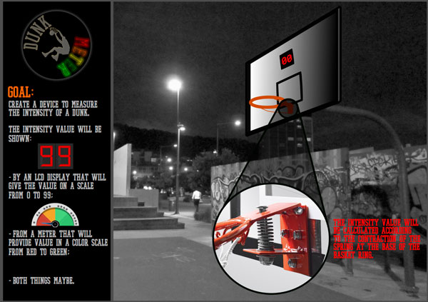
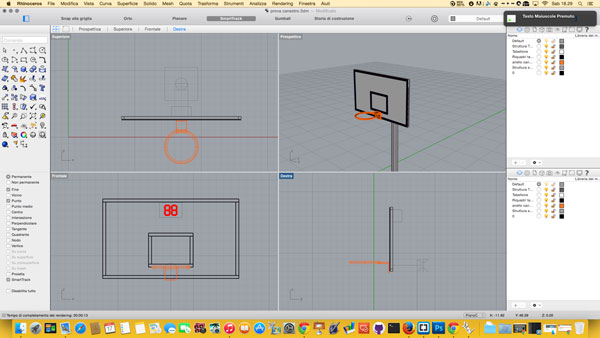
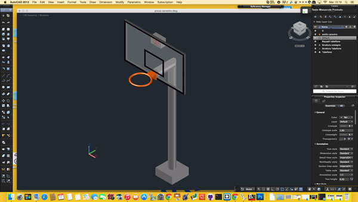

This week we had to model (draw, render, animate, simulate, ...) a possible final project, and post it on your class page. The recommended programs have been many, in the end I chose Inkscape for the part of design in 2D, and Rhino for the part of 3D drawing and rendering.
Inkscape is a vector graphics editor, cross-platform, open source and free.
My experience of drawing (both 2D and 3D) was limited to Autocad, so to begin to become familiar with the program I decided to realize a sample logo for my project.
Simply using an image taken from the internet, then turned into a vector, I got a decent result.

Then I added a font taken from the internet, which can be associated with the basketball, and changed the colors of the text in order to make the idea of the color scale.
The realization of this simple logo has allowed me to become familiar with the main controls of Inkscape.
To explore more the various aspects of the program I decided to make a sketch to represent my final project.
I found an image to use as a background, I've adapted to my drawing and I added parts designed by me.

Using the same font of the logo and entering some pictures I tried to explain in general the idea of my project. The final result, although very general, it was still good.

I already had some experience with CAD software as Autocad and Inventor and now I choose Rhinoceros, because I have seen that is very powerful and works very well with the Fablab Machines.
First thing to consider when working with Rhino: it's a commercial software, so it will cost some amount of investement to hold a license.
But beeing a Mac user i got lucky because is COMPLETELY FREE! (note: there are some features missing, but every week or two there is a new build, so it's always improving)
I started drawing a 3D model of my basket and I found very useful the command line that is located on the top left: just enter the name of the operation that you need and immediately find the corresponding command.
After some hours of work, the most of these dedicated to the study of the various functions, I created a very basic 3D model.

As already mentioned, the Mac version of Rhino has some limitations: one of these is the management of the materials during rendering. To have a more realistic rendering I decided to export the .dwg file from Rhino and import it into AutoCAD.

In addition to version .dwg, I also exported the file .stl to import it in the web page and then have a preview of the 3D model.